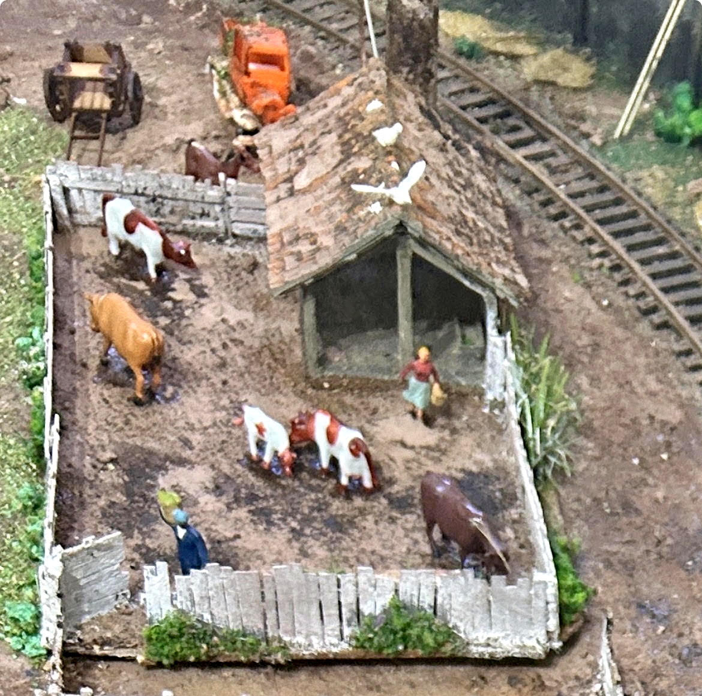
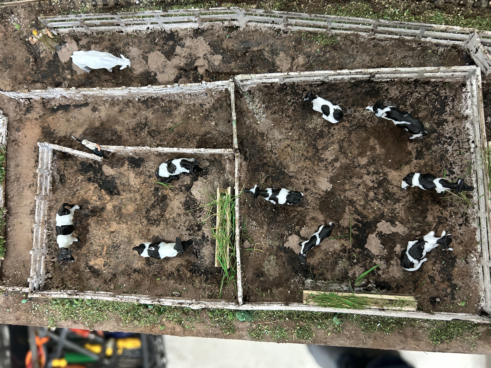
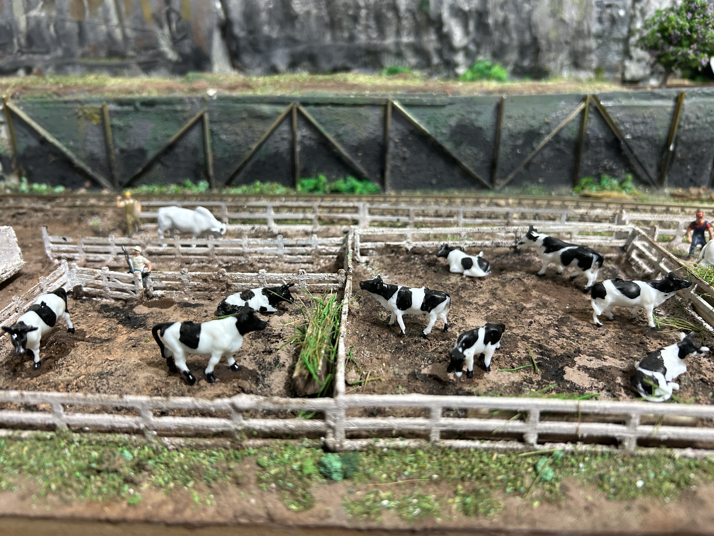

Preparar o piso do curral
O piso de um curral apresenta características próprias, resultantes do intenso trânsito de animais e da ação das condições climáticas. Para obter um acabamento realista na maquete, recomenda-se reproduzir os seguintes aspectos:
- Terra fortemente compactada pelo pisoteio constante dos animais.
- Ausência ou pouca presença de grama no interior dos piquetes, devido ao desgaste contínuo do solo.
- Pequenas depressões provocadas pelas marcas dos cascos, distribuídas de forma irregular.
- Áreas de lama escura nas proximidades dos portões, bebedouros e cochos, locais de maior concentração de animais.
- Manchas de esterco, alternando regiões secas e úmidas, distribuídas aleatoriamente sobre o terreno.
- Coloração predominante em tons de marrom-escuro, com variações em cinza e preto nas áreas de maior circulação.
- Pequenas poças de água em locais com drenagem deficiente.
- Acúmulo de terra e esterco junto às cercas, cantos e demais pontos de difícil limpeza.
- Pequenos tufos de capim apenas próximos às cercas, onde os animais normalmente não conseguem alcançar.
- Como o curral está localizado ao lado da ferrovia, a região próxima aos portões e à entrada pode apresentar aspecto mais enlameado e desgastado, enquanto as áreas mais afastadas podem ter apenas solo seco e compactado.
Procedimento
A preparação da base do terreno deve seguir o procedimento descrito no capítulo “A preparação do Terreno”, neste capítulo.
Após a secagem da base, aplicar os efeitos descritos neste capítulo utilizando tintas, pigmentos e materiais naturais, reproduzindo as diferentes tonalidades, marcas de uso e irregularidades características de um curral em funcionamento. O objetivo é obter um cenário com aparência natural, evidenciando o desgaste provocado pelo trânsito contínuo dos animais e pelas condições do ambiente rural.

Vista geral do curral, com cercas, animais, figuras, abrigo, caixa-d’água e outros elementos que compõem a cena rural.

Vista superior mostrando a divisão dos cercados, a distribuição dos animais e os detalhes do terreno, com áreas de terra e pequenos pontos de vegetação.

Vista frontal dos cercados, destacando os animais, as divisões internas, as cercas envelhecidas e os detalhes de vegetação que ajudam a dar maior realismo à cena.
Obs.: O curral foi montado com diversos elementos adquiridos prontos, entre eles o próprio curral, figuras, animais, cercas, caixa-d’água, carroça e caminhão. As peças chegaram sem acabamento e foram pintadas e envelhecidas com tintas PVA, betume da Judeia e rejunte marrom, buscando integrar todos os elementos ao cenário e dar à composição uma aparência mais natural e usada.